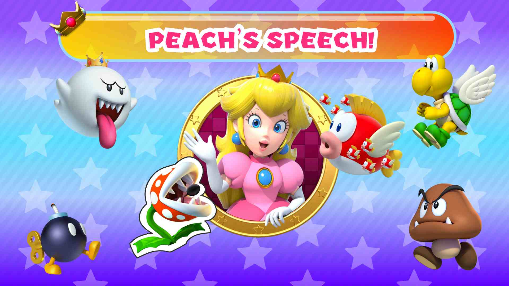
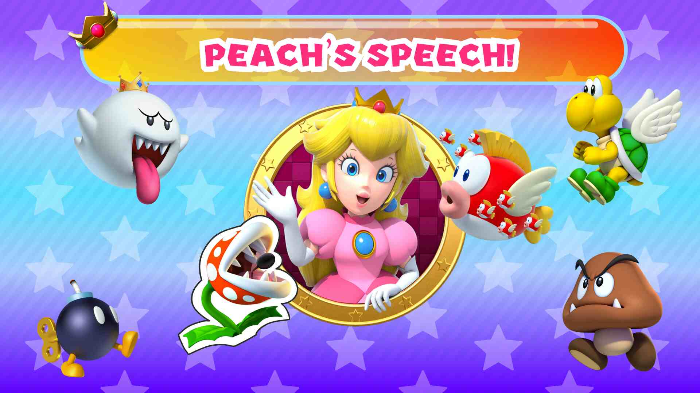
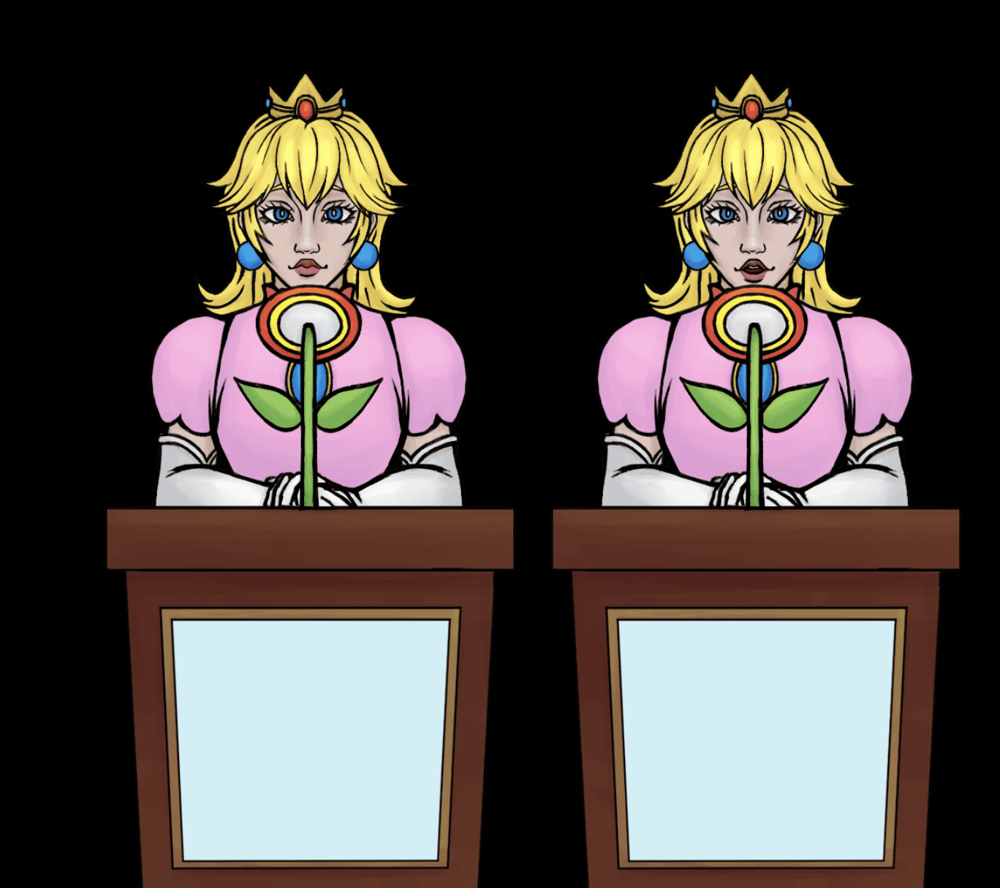
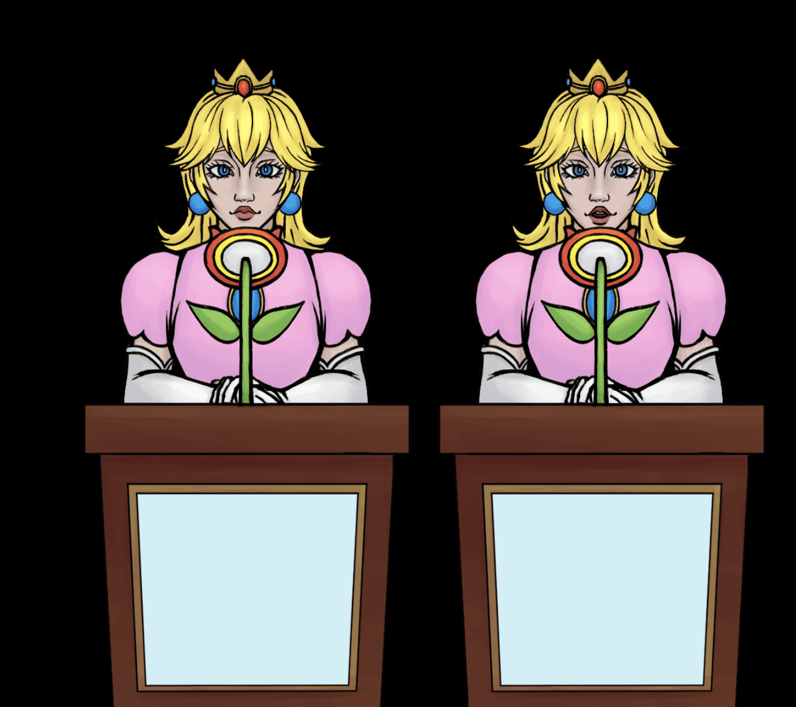

Our project will be creating a microphone for people to use when giving speeches in our game, Peach’s Speech. The microphone will be shaped as a mushroom and will register noise levels which will correspond to timed unity events in the game. We will use multiple analog output audio sensors to get averaged sound data about when the player is speaking into the mushroom. Our controller and game will make the player more thoughtfully engage with the relationship between power and voice, and how different politics can be represented through sound. Different parts of the mushroom might be more or less audio-sensitive so people have to explore the controller to better understand how to make an effective point. This would be mirrored with the game in that the player is using specific ways of speaking and speech to make an effective argument to rouse the audience of Goombas, Koopas, and Cheep Cheeps. Some parts of the microphone may be more or less receptive to each one of those groups, which will represent the different needs and hopes of the various groups within the audience.
Mechanic: The text of the speech is always ongoing. The player must speak into the microphone when the screen shows the timing of the words. The player can also switch groups (koopa, goomba, etc) when the text shows on the screen for the corresponding group.
Roles Tench: Project Manager and Arduino building/code. James: 3D Modeling and Printing Gabby: Unity Code and Arduino Integration Hua: Unity Code and Asset Integration Jessie: UX, Asset Creation and sketches Jessica: UI and Asset Creation
Documentation


UI Reference

 


 
